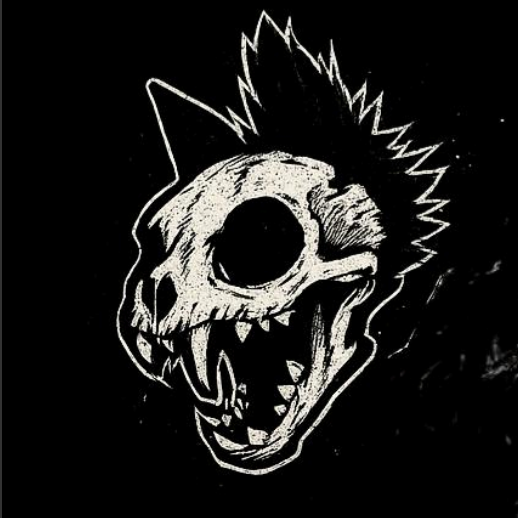

Anper
Anper es una banda de punk independiente que rescata los sonidos dosmileros del happy punk trayendolos a la actualidad con una propuesta fresca y llena de energía. Con letras que hablan de la vida cotidiana, el amor,desamor y la rebeldía, Anper se ha ganado un lugar en la escena musical con su estilo único y su actitud auténtica.

Dicksons
Los Dicksons son una banda de rock alternativo que mezcla elementos de pop y glam/rock que usan las sustancias como herramentas de trabajo para su creatividad y componer musica al igual que presentar musica de otros artistas conocidos mundialmente.